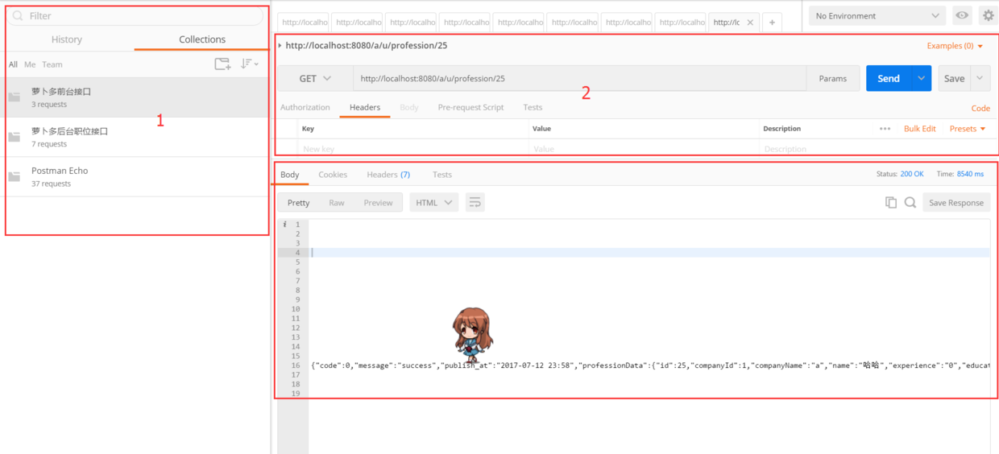

分享人：刘纪林
1.背景介绍
2.知识剖析
3.常见问题
4.解决方案
5.编码实战
6.扩展思考
7.参考文献
8.更多讨论
为什么要测 web 接口？
接口测试是功能测试重要的一部分，做为 java 开发人员，交给你负责的业务模块在完成以后，需要自己先验证一下。
你在 controler 里面写的接口能不能正常提供服务，有没有对参数进行校验，边界值有没有考虑到，有没有做访问限制（/a/u）, 返回的数据格式对不对以及接口的性能（响应时间）如何
用什么工具测？
火狐浏览器插件 - RESTClient，Chrome 浏览器插件 - Postman 等等。
Postman 是一种网页调试与发送网页 http 请求的 chrome 插件。我们可以用来很方便的模拟 get 或者 post 或者其他方式的请求来调试接口。
postman 的界面
1，Sidebar
侧边栏是请求的接口历史和记录
2，请求编辑区
是 http 请求的编辑区域，包括方法，接口，参数等等
3，请求响应区
发送测试之后的返回数据
测试 get 请求：比如请求职位详情
测试 post 请求：比如请求新增职位
测试 put 请求：比如修改职位
测试 delete 请求：比如删除职位
1.Method：GET API：URL + 参数（职位 id）
2.Method：POST API：URL + 参数（职位对象）
3.Method：PUT API： URL + 参数（职位对象）
4.Method：DELETE API：URL + 参数（职位 id）
Let't go !
传参的一些注意事项:
比如对应 @RequestParam，@PathVariable ，@RequestBody 参数
对应接口中定义的这些参数在 postman 中有什么差异
1.[http://www.cnblogs.com/gaojing/archive/2012/02/04/2413626.html]
2.[http://blog.csdn.net/liuchunming033/article/details/51440223]
3.[http://blog.csdn.net/nevermore_33/article/details/46430293]
感谢观看,如有出错,恳请指正
BY : sweetalin